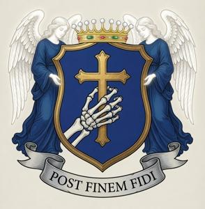
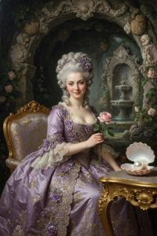

House of Olesczan


The Counts of Olesczan (Zgurian: Olesczan, Deglian: Oleŝan, Glagolitic: ⰑⰎⰅⰛⰀⰐ, German: Oleschtschan, Latin: Olescianus) are one of the oldest noble families of Former Upper Pannonia (FUP). Throughout the eighteenth and nineteenth centuries its members regularly held the country's highest military, civil and church offices. This kept the Olesczans among the most influential noble houses of Habsburg-era Upper Pannonia, even though they never matched the wealth of their eternal rivals, the Bregovi.
Early history
Family legend traces the line to Alexianus, a Roman military commander (comes) who supposedly governed the province of Upper Pannonia in the fourth century. Nothing in the historical record supports this. The name is plainly Slavic, most likely derived from a local place name meaning “alder” or “forest edge”. Still, the family is genuinely old: chronicles mention it from the eleventh century onward. The first known Olesczan held lands north of Bregovo and helped Saint Tibor establish Catholicism in Upper Pannonia. In the centuries that followed, the family stayed loyal to the Latin rite, which did not stop it from resisting the Prince Bishops of Bregovo whenever they tried to expand their domains.
Heraldry, reputation and traditions
The Olesczan coat of arms, granted by Emperor Ferdinand II, shows a dead hand clutching a cross, with the motto Post finem fidi (“Faithful beyond death”). The image goes back to the family legend of Dominik Olesczan, who fought at Mohács and was taken prisoner by the Turks. Dominik, later canonized as a martyr, gripped a cross so tightly that no torture could make him open his fingers. The Turks finally quartered him and burned the hand, yet even charred to the bone it is said to have kept its grip on the cross. The hand was kept as a relic in the family chapel, and by tradition every member of the house was buried holding a cross.
The Olesczans were known for their piety, chivalry, loyalty to the throne and spotless morals, and they guarded that reputation carefully. The Habsburgs respected them and often appointed them to high office in Upper Pannonia, much to the Bregovis' resentment; the feud between the two families became legendary. Younger sons usually entered the priesthood, and many of them rose high in the Church as well.
Children were traditionally given Latin, emphatically Catholic names.
Heads of the House
After the Ottoman conquest of Hungary and Upper Pannonia, the Olesczans lost their lands, withdrew to Royal Hungary and entered Habsburg service. Among other campaigns, they fought in the Thirty Years' War, where their fanatical devotion to Catholicism and their ruthlessness toward Protestants stood out even by the standards of the day. In 1631, Ferdinand II raised Clemens Olesczan to the rank of count for his loyalty to throne and faith.
Beatus (1672–1743) fought with distinction under Eugene of Savoy in the Great Turkish War. He took part in the liberation of Upper Pannonia, including the capture of Kuzgun Qalesi, where he personally stormed the wall and raised the imperial flag over it. For these deeds Emperor Leopold granted him estates in the recaptured territory and made them a majorat — an indivisible inheritance passing to the eldest son — together with the titles of count and Head of the House (HotH). From 1712 to 1738 Beatus governed the County of Upper Pannonia, which covered the northern part of present-day FUP. He became notorious for his savage persecution of witches, sorcerers, Gypsies and heretics. Many of them fled south to the Generalate of Upper Pannonia, whose pragmatic commander Ferenc Bregovi gladly took in every man who could bear arms and every woman who could bear children, regardless of faith or dealings with the devil. This was the start of a hereditary feud between the Bregovi and the Olesczans that would last for generations.
Julius (1709–1774, HotH 1743–1774), son of Beatus, governed the County of Upper Pannonia for many years, as his father had. St. Tibor's Cathedral in Vronovica was built under his administration. Witches and heretics were by then all but gone from the county, so he spent less effort hunting them and far more enforcing good morals and Catholic piety among his peasants. He introduced flogging for missing church services or breaking a fast, and tried to introduce genital branding for extramarital sex, but had to back down when the higher authorities objected. Count Julius was also remembered for killing his own daughter Margareta, who had sinned, on the verdict of a family court of honour, and for his feud with the Bregovi, which in 1745–1746 escalated into open war between the County and the Generalate. In 1747, Empress Maria Theresa forced the two sides to make peace. The conflict flared up again in 1754 but was cut short by the Seven Years' War, in which the heirs of both houses, Lieutenant Viktor Olesczan and Colonel Konrad Kazimir Bregovi, fought side by side. This led to a lasting reconciliation, sealed in 1759 by the marriage of Viktor Olesczan to Paulina Bregovi, Konrad Kazimir's cousin. As governor, Count Julius seldom put the treasury's interests above his own. He greatly increased the family fortune and built an estate at Gajnovo, with a lavish private chapel and a rich library of religious literature.
Viktor (1734–1798, HotH 1774–1798), son of Julius and a hero of the Seven Years' War, was drawn to utopian ideas and tried to found an ideal Christian communist community at Gajnovo. The peasants owned the land in common and worked, ate and prayed together, and their households and farming followed the latest advances in agronomy. But the peasants kept running away and the farm made nothing but losses, so in 1785 Count Viktor abandoned the experiment and leased the land out. In 1775 he was appointed commander of the Generalate of Upper Pannonia, which infuriated the Bregovi, who had come to regard the territory as their own fief. Konrad Kazimir Bregovi revived the old feud, but in those more civilized times it was fought with lawsuits and intrigue rather than arms. Bregovi accused Olesczan of kidnapping and murdering his son Didrik Darislav in 1768; Olesczan claimed that Bregovi had bribed his servants and tried to poison him. In the end the old comrades-in-arms made up, and in 1780 the peace was again sealed by a marriage: Lipot Lotar, the Bregovi heir, married Viktor's daughter Angela. Since the couple were second cousins, the Church objected, and the families had to pay a fine for the dispensation.
Benedykt (1770–1825, HotH 1798–1825) was, according to persistent but unconfirmed rumours, seduced at the age of fifteen by his sister Angela. He spent the rest of his life tormented by this fall, doing penance and living an extremely ascetic, not to say self-torturing, life. As a young man he tried to take monastic vows, but his father wanted him, rather than his feeble-minded younger brother Maksimilian, as heir. Count Viktor forbade Benedykt to become a monk or a priest and in 1792 forced him to marry. From all the prospective brides, Benedykt chose the least attractive, Anna-Pia Grezdeni, and performed his marital duties purely out of obligation to the family. The couple had eleven children, of whom four girls and one boy survived. Count Benedykt never spoke to any member of the House of Bregovi except Gellert, Bishop of Vronovica, and forbade his children to marry into that family.
Leo (1800–1857, HotH 1825–1857), the only surviving son of Count Benedykt, was a quiet, timid man known for neither good nor evil deeds. The family fortune declined under him. None of his four sisters ever married, and all five siblings lived together at Gajnovo. Leo himself married only after his father's death, in 1826, taking a commoner named Petronia as his wife. She died of cholera in 1856, and new waves of the same epidemic in 1857–1858 killed Leo and two of his sisters.
Damian (1829–1890, HotH 1857–1890), Count Leo's only son, left home early to enter the Theresian Military Academy and made his career in the army. He fought in every campaign of the Austrian Empire from the late 1840s to the late 1860s and was a general by the age of forty. In 1869, after the sudden death of Lajosz Leonard Bregovi, he was appointed Ban of Upper Pannonia. His tenure (1869–1881) saw the beginning of the province's economic boom and the wide spread of Slavophile ideas, which Count Damian largely ignored, seeing no political threat in them. He readily allowed the founding of the Pannonian Pedagogical Institute and the Slavic Theatre, both of which immediately became centres of the Slavic Revival and of the ideological struggle for the province's autonomy. In 1849, at the height of the campaign against the Hungarian rebels, Damian married Rosemaria Pálffy, a girl from a noble and wealthy Hungarian family; the match helped restore the family's shaken finances.
Celestyn (1851–1898, HotH 1890–1898), Count Damian's only son, also became an officer, but he served in the Hungarian Honvéd and never saw war. A staunch supporter of Hungary, he, unlike his father, saw Slavic nationalism as a threat. Appointed Ban of Upper Pannonia in 1891, he launched an offensive against the Slavic autonomists, which grew especially harsh from early 1896, after a scandalous public performance of the banned version of the nationalist anthem Fairer than the Sun. On Easter Sunday, 10 April 1898, Count Celestyn was murdered on the church steps by a member of the underground nationalist group known as the Scorpions (see Mourning Thursday).
Justus I (1886–1946, HotH 1898–1946), Count Celestyn's only son, was an even more fervent supporter of Hungary and bore a deep personal hatred for the Slavic movement, which he rightly blamed for his father's death. He held no public office under the Habsburgs. In the First World War he served in the Honvéd and fought on the Italian front. Under the First Republic and the monarchy of Drogan I, Count Justus lived as a private citizen but made no secret of his hostility to Pannonian independence; his house in Vronovica was a meeting point for pro-Hungarian nobles and intellectuals. He is believed to have secretly supported the Pannonian Soviet Republic in 1919; it is known for certain that after its defeat he saved several Bolsheviks from reprisals and helped them leave the country. In 1940, Count Justus welcomed the Hungarian annexation. The Hungarian authorities offered him the post of Mayor of Vronovica, which he gladly accepted, and throughout the occupation he devoted himself, out of conviction rather than fear, to Magyarization and to stamping out the Slavic heritage. In 1944 he stayed in the city and fought in its defence against the Soviet army to the very end. After the capital fell, he surrendered, was tried in a show trial, convicted of high treason and shot in 1946.
Martyn (1912–1979, HotH 1946–1979), the elder son of Count Justus, managed to escape the country in 1945 with some of the family's money and settled in Switzerland. He lived there for the rest of his life, refusing to recognize the new communist government, but also keeping his distance from the royalist émigré movement that had gathered around Queens Adele and Ljudmila.
Kristyan (1933–1994, HotH 1979–1994), Count Martyn's only son, broke with his father's hard line and began working with the Pannonian political emigration, above all with Cardinal Rudecki and later Cardinal Petrov; like every Olesczan, he was a devout Catholic. After the fall of the communist regime, Count Kristyan took part in the humanitarian programmes of the Queen Ljudmila Foundation, and in 1994 he supported the restoration of the monarchy and attended Ljudmila's coronation. Her assassination was a heavy blow to him, and he died himself a few weeks later.
Teodor (1968–2025, HotH 1994–2025), Count Kristyan's only son, was a financier by training. He lived in Vienna, was closely involved with UNOMFUP, and chaired the Former Upper Pannonian Clearing House from its founding until his death.
Justus III (b. 1993), the current Head of the House (since 2025), has lived in the Neutral Zone of Vronovica since 2018. He owns Olesczan Telecom, the largest mobile and internet provider in FUP. The company operates in both republics and in the Neutral Zone and serves as UNOMFUP's general contractor on numerous communications and IT projects.
Other notable members
Younger sons of the Counts of Olesczan, who did not inherit the majorat, usually became priests or monks.
Maksimilian (1771–1836), the feeble-minded younger brother of Count Benedykt, often ran away from home, gave his money and clothes to the town's poor, played the holy fool in every way and delivered incoherent speeches. The common people revered him as a saint and prophet. Although the Church never canonized him, he is still venerated in Pannonian folk Catholicism as “Maks the Blessed”.
Justus II (1922–1983), younger brother of Count Martyn, fled the country with him in 1945. He graduated from a seminary in Rome, was ordained a priest and became an aide to Cardinal Rudecki. This led to a quarrel with Martyn, who could not stand the cardinal as a supporter of Pannonian independence and of the monarchy. Justus became a prominent figure in the Pannonian Catholic Church in exile. After Rudecki's death in 1972, he served his successor, Cardinal Petrov, and helped reconcile him with the new Head of the House, his nephew Kristyan.
Notable women


Angela (1765–1801), daughter of Count Viktor, was raised in a convent and had never seen a man other than her father and priests before her marriage to Lipot Lotar Bregovi in 1780. Under Lipot's influence she followed him into debauchery, took multiple lovers with the husband's consent, and participated in his orgies. Later historians nicknamed her the “Pannonian Messalina,” though some argue the accounts are exaggerated.
Anna-Pia (1767–1826), née Grezdeni, was large and mannish in build and known as the ugliest girl in the country. This was exactly why Count Benedykt Olesczan chose her as his wife, as described in his biography above. Despite her repellent and, by some accounts, frightening looks, she had a gentle and easygoing character. All four of her daughters inherited her unattractive features, and their father's strict upbringing ensured that none of them ever married.
Dora (1925–1989), sister of Count Martyn and Justus II, failed by sheer accident to leave the country with her brothers in 1945. She was left in communist Upper Pannonia as a penniless orphan in the dangerous position of a daughter of enemies of the people. In 1949 she married Pavel Jadenov, an officer of the NON, probably not entirely of her own free will. The marriage nevertheless proved solid, and Dora gave her husband useful connections among the old aristocracy, which served him well as head of the Economic Intelligence Directorate.
Magdalena (1937–2002), daughter of Count Martyn and sister of Kristyan, went into exile with her father. From 1949 she corresponded with her aunt Dora (see above), who recruited her as a NON informant. Magdalena spied on her father and brother and read their letters and papers, until she was caught by chance in 1953. Knowing the Olesczan ways, and realizing that her father would not hesitate to hand her over to the Swiss police (at best), she fled to the Pannonian embassy and secured her return home, probably with the help of NON agents. She lived with the Jadenovs and in 1959 married Blazsen Bregovi. A wedding between two scions of the former aristocracy, at the height of socialist construction in the People's Republic, caused a scandal but brought no repressions: Blazsen's father, Svjetovit, was already a successful sculptor in the Party's good graces, and Magdalena was clearly under NON protection. For the rest of her life she lived as if socialism did not exist. She read no newspapers or new books, went to the theatre only for old plays, had her children taught by tutors from “good families” (somehow exempting them from compulsory state schooling), went to church, and dressed and furnished her home as though time had stopped in 1940. The family's fees and privileges kept the illusion alive. Magdalena managed to ignore the fall of the communist regime and the civil war as well.